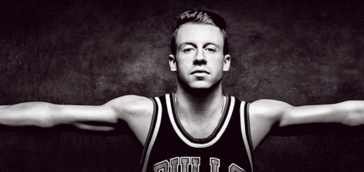

Age: 32
Top Songs: Same Love, Thrift Shop, White Walls, Downtown
Net Worth: $18 million
 Coming out of Seattle, Washington is the controversial Mackelmore. Known for being one of the most vocal rappers and proactive in the political world, Mack is not afraid to let his voice be heard. His flow is like a rivers, constant and rhythmic and almost hypnotizing to listen to. People have not taken him seriously, but let me be the first to tell you should take this guy for real. His beats are killer, and once he starts actually rhyming words together instead of sounds then you could see him move into the real legends of rap and music all together.